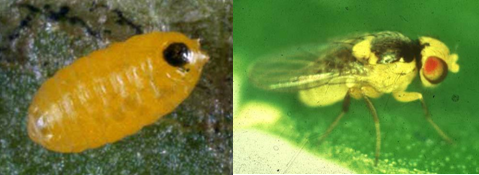

TOMATO :: MAJOR PESTS :: SERPENTINE LEAF MINER
2. SERPENTINE LEAF MINER: Liriomyza trifolii (Agromyzidae: Diptera) - An introduced pest becoming serious in the recent years.
Damage symptoms
Maggots mines into leaves and cause serpentine mines drying and drooping of leaves.
Bionomics
Egg: 2-4 days. Female thrusts eggs into the epidermal layer of leaves. Larva: 7-10 days. Minute orange yellowish apodous maggots. Pupa: 5-7 days. Pupates within mines. Adult: Pale yellow in colour.
|  |
|---|
Management
- Collect and destroy mined leaves
- Spray NSKE 5%